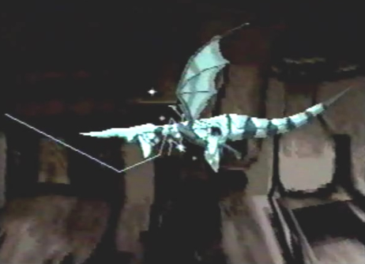
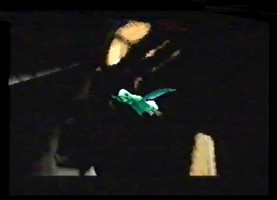

Dragon Spirit  |
Info While passing through the first large door within the ancient ship at Georgius, we encountered three beams of light that manifested into a dragon. The dragon was a lost spirit. It wanted to show us something, so we proceeded to follow it throughout the everlasting corridors inside the ship. It disappeared behind a final green door. Upon opening this door, we were drawn into an indescribable portal of beautiful green light. As the dragon and I flew through this portal, we somehow felt euphoric and at peace with ourselves. As we came out of the portal, we arrived in some kind of large chamber. Directly in front of us, was a large engraving of a dragon, a dragon crest if you will. It was simply awe inspiring! |
Dragon Pup  |
Info When the dragon accessed the dragon crest, turned it into pure energy, and stored it within its body for safe keeping, a strange little creature emerged from it. My only thoughts were that it must have been the reincarnation of that ghost dragon, since it was last seen traveling towards this room. It must have wanted us to find its resting place, so it could be revived. This little dragon was immediately drawn to our side by its own free will. We had gained a new ally. He wasn't to be taken lightly. He knew just as many tricks as my dragon! He was performing spins, flips and rolls with ease. He was a skilled little guy! Although, I don't think he quite trusted me yet. I guess I would have to work hard in order for him to warm up to me. |